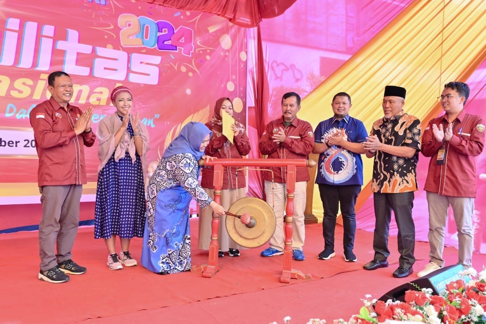
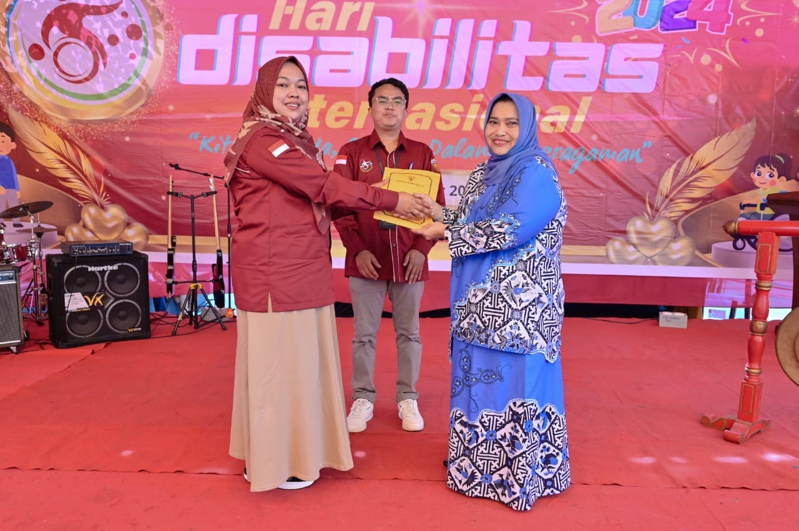
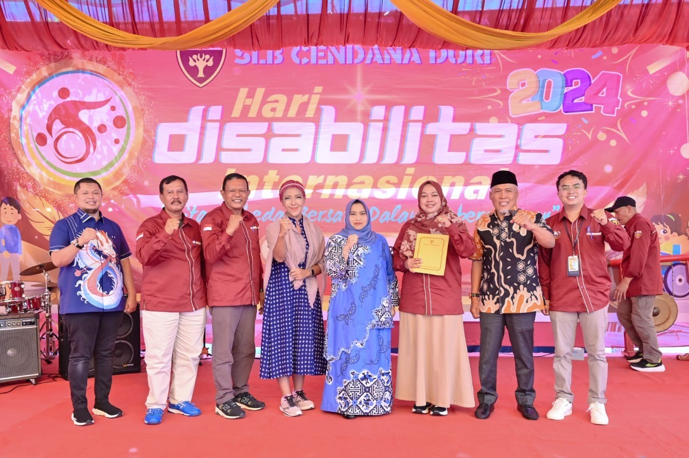

Bupati Ajak Masyarakat Bergandeng Tangan Dukung Penyandang Disabilitas
Babam Suryaman, S.Pd.I - Diskominfo kabupaten bengkalis
Ahad, 01 Desember 2024 15:13
MANDAU - Bupati Bengkalis, Kasmarni, mengajak seluruh lapisan masyarakat agar bergandeng tangan mendukung penyandang disabilitas. Menurut Kasmarni, setiap individu berhak mendapatkan kesempatan yang sama dalam derap pembangunan Negeri Junjungan, termasuk penyandang disabilitas. Dijelaskan bupati perempuan pertama di Riau itu, penyandang disabilitas merupakan bagian tidak terpisahkan dari kehidupan. Mereka memiliki hak yang sama untuk hidup mandiri, berpartisipasi aktif dalam pembangunan, dan mendapatkan akses terhadap berbagai fasilitas publik.

Guna mewujudkan hal tersebut, Kasmarni mengajak semua pihak, baik pemerintah, elemen masyarakat, maupun sektor swasta, saling bahu membahu menciptakan lingkungan yang inklusif dan ramah bagi penyandang disabilitas. Ajakan itu digaungkan Kasmarni saat menghadiri Hari Peringatan Disabilitas Internasional, di Mall Mandau City, Ahad, 1 Desember 2024. Kasmarni, juga memberikan apresiasi yang tinggi kepada SLB Cendana Duri, termasuk para pendidik dan pengurus yayasan, atas dedikasi mereka dalam mendukung anak-anak penyandang disabilitas mengembangkan potensi dan bakat mereka.
"Kami sangat bangga dengan anak-anak SLB Cendana Duri yang mampu menunjukkan kemandirian, kreativitas, dan prestasi ditengah keterbatasan. Mereka adalah aset bangsa yang harus didukung penuh," tambahnya. Bupati kembali menegaskan bahwa perlindungan dan aksesibilitas bagi penyandang disabilitas akan terus ditingkatkan. Upaya tersebut mencakup peningkatan pelayanan dasar di bidang pendidikan, kesehatan, pelayanan publik, dan kesempatan kerja.
Diakhir pengarahannya, Bupati kembali berpesan kepada penyandang disabilitas untuk terus semangat dan berjuang. "Kalian adalah inspirasi bagi kita semua. Jangan ragu menunjukkan kemampuan kalian. Pemerintah dan masyarakat siap mendukung kalian sepenuhnya menuju masa depan yang lebih cerah," tutupnya. Acara peringatan Hari Disabilitas Internasional yang digelar tersebut, diisi dengan berbagai kegiatan kreatif dan inspiratif yang menunjukkan semangat keberagaman dan kebersamaan.
Turut hadir Wakil Ketua DPRD Kabupaten Bengkalis H. Misno, Asisten Perekonomian dan Pembangunan Setda Bengkalis H. Toharuddin, Direktur RSUD Bengkalis dr. Azzahari Effendy, Sejumlah Kepala Perangkat Daerah di lingkungan Pemkab Bengkalis. Kemudian Direktur Yayasan Pendidikan Cendana Riau, Dr. Deni Satria, Camat Mandau Riki Rihardi, Camat Pinggir Zama Rico Dakanahay, Camat Bathin Solapan Muhammad Rusydy, Camat Talang Muandau Risky Afriandi, Kepala Sekolah SLB Cendana Duri Nurfitri Elyondri, Pimipinan Unit TK, SD, SMP, dan SMA Yayasan Pendidikan Cendana Duri, Kepala Sekolah SLB di Kecamatan Mandau, Bathin Solapan, dan Pinggir, Komite SLB Cendana Duri Mukhlis, Forkopimcam Mandau, serta Pimpinan Perusahaan di Kecamatan Mandau, Pinggir, Bathin Solapan dan Talang Muandau. #DISKOMINFOTIK